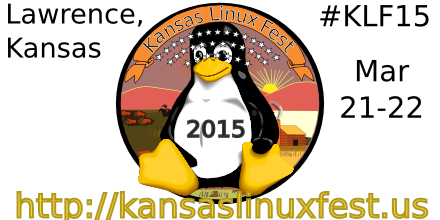

modified : 2014-10-18 18:00 keywords : Linux, Main
a Yearly Open Source (Free/Libre Open Source Software) and Open Knowledge Festival for Kansas¶

This is a project of the Free/Libre Open Source and Open Knowledge Association of Kansas (www.openkansas.us) and other organizations. We are still working on the board of directors for the conference and planning.
Venue¶
We are very happy to have now confirmed the Lawrence Public Library as our host.
Have confirmed the date of 21-22 March 2015.
We are looking for sponsors the conference, see our (Prospectus)[/prospectus.html]
The Call for papers(Talks) can be found here : CFPWiki and here Lanyrd
Connect with us¶
Join the Mailing List Here
You can join the call for [papers review team] (https://groups.google.com/forum/#!forum/kansas-linux-fest)
Follow the event on lanyrd
Follow the Free/Libre Open Source Software and Open Knowledge Association of Kansas on Facebook https://www.facebook.com/flosokaks
Follow the Free/Libre Open Source Software and Open Knowledge Association of Kansas on Linked In
Follow the Kansas Linux Fest on Facebook https://www.facebook.com/kansaslinux fest
Follow the Kansas Linux Fest on Hackaday.io
Graphic Arts and webdesign¶
We know that our logo and style is humble, and you are welcome to suggest new logos and styles, just fork the pages on github and send us your ideas!
You can the logo on Github Logo On Github
Chat with us¶
Join #openkansas and #kansaslinuxfest on irc.freenode.net
Please use xchat http://xchat.org/ or For windows, and if possible and stay on the channel, there is not always someone online
Kansas Linux Fest is maintained by KansasLinuxFest